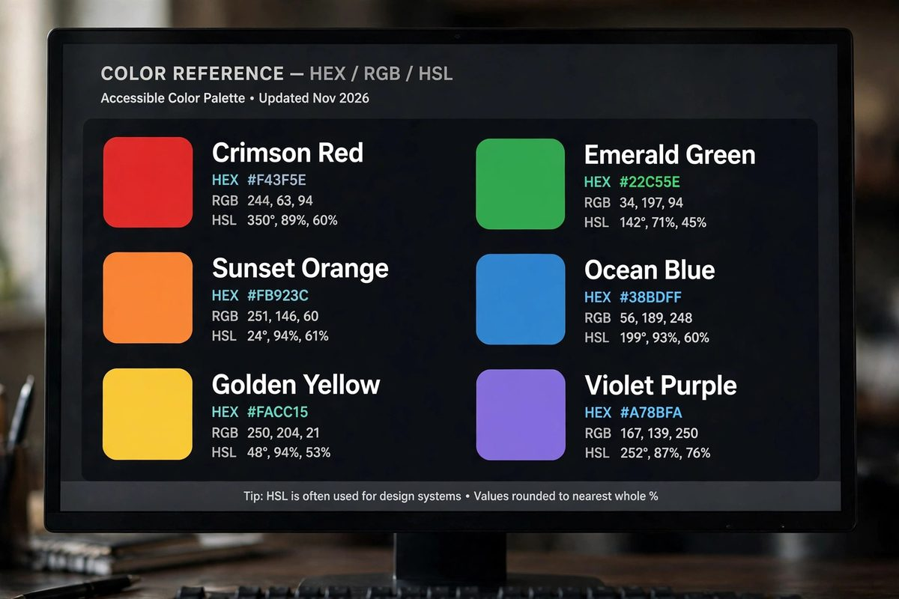
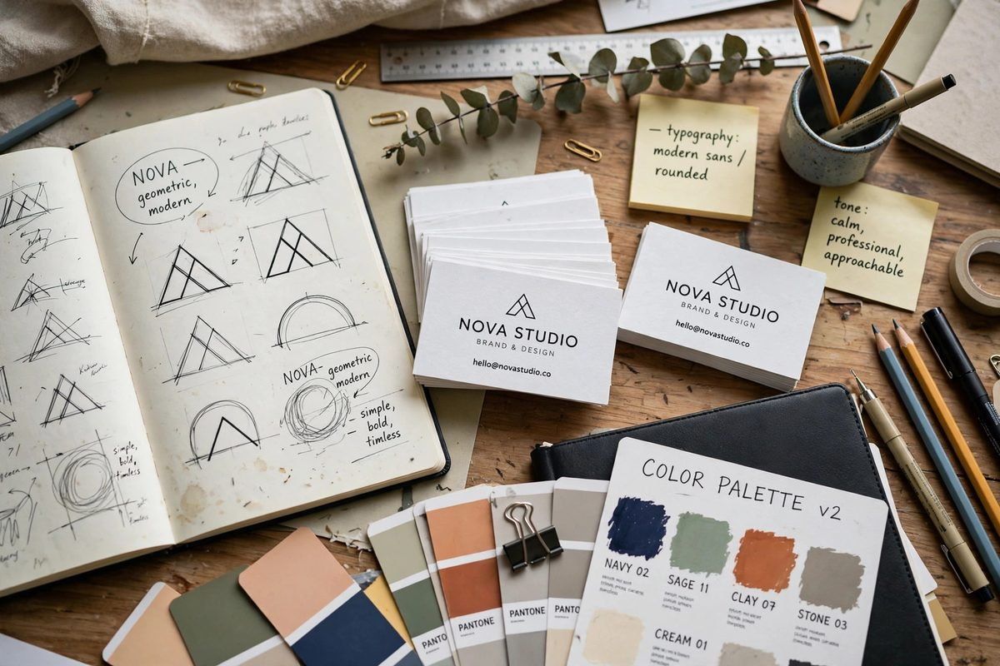
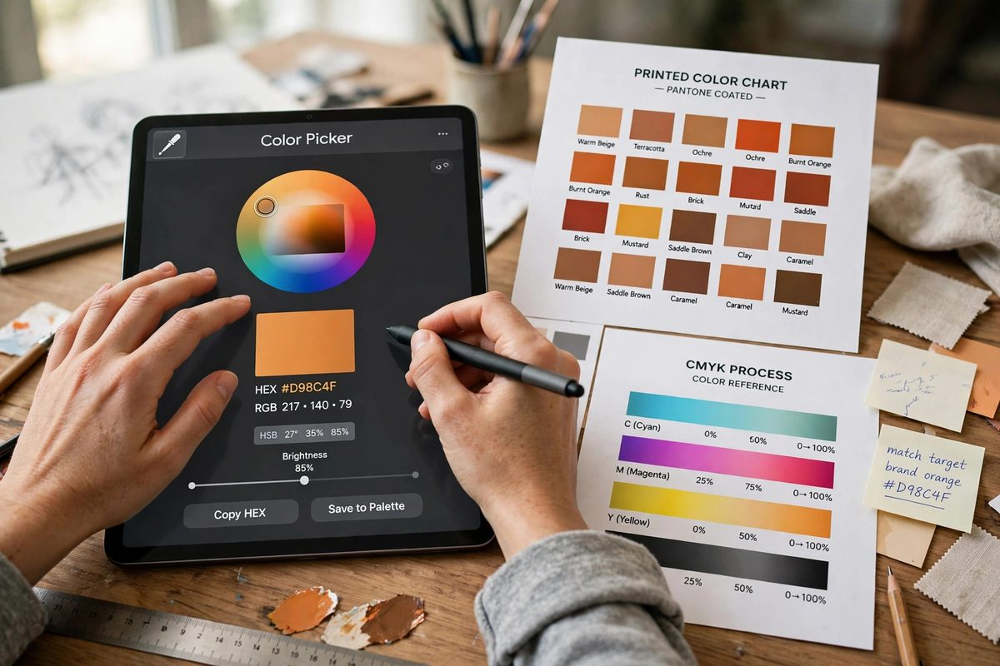
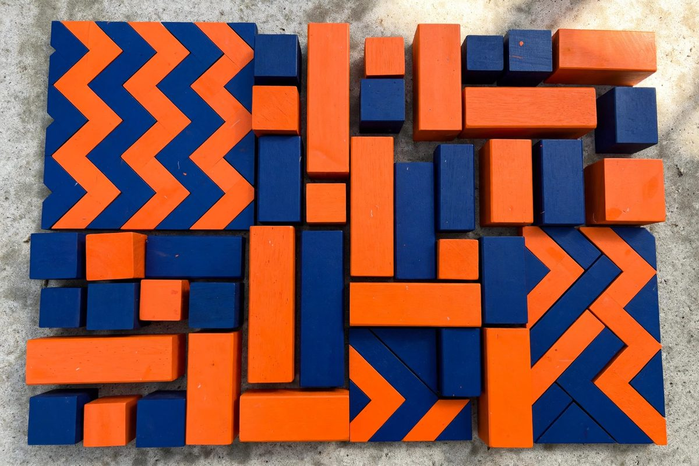

Color-Blind Friendly Design

About 1 in 12 men sees color differently. Learn how to design charts, buttons and maps that work for everyone.
How color blindness works
Color blindness, more accurately called color-vision deficiency, means the eye's color receptors respond differently to certain wavelengths. The most common form is red-green deficiency, affecting about one in twelve men and one in two hundred women. People with it can still see color, but reds and greens look similar, as do some blues and purples. A design that relies on red versus green alone, such as a chart or a form error, can become unreadable.
Never use color alone
The golden rule is simple: never use color as the only way to convey information. Pair a red error with an icon and the word Error, a green success state with a tick, and chart lines with different shapes, patterns or labels as well as colors. Links should be underlined as well as colored. This helps not only color-blind users but anyone reading in bright light or on a poor screen.
Choosing a safe palette
Some color pairs are much safer than others. Blue and orange are distinguishable by almost everyone, including people with red-green deficiency, which is why they are popular for charts. Avoid red-green, green-brown and blue-purple pairings for meaning. Tools that simulate color blindness can show you how your palette looks with different deficiencies; run your key screens through one before launch.
Designing charts and maps
Charts are where color problems hurt most. Use a color-blind-safe palette such as the Okabe-Ito set, label lines directly instead of relying on a legend, and vary line style with dashes and dots. For maps, avoid red-green scales for good versus bad; use a light-to-dark single-hue scale, or a blue-to-orange diverging scale, and add numbers or symbols to the regions that matter.
Testing with real people and tools
Simulators catch many problems, but nothing replaces testing with real users who have color-vision deficiency. If you cannot recruit testers, at least view your design in greyscale: if the meaning survives without color, it will survive color blindness too. Add this check to your launch checklist alongside contrast testing, and fix what you find before release rather than after complaints.
Color blindness in everyday products
Color-vision deficiency affects everyday products as well as websites: traffic lights, maps, board games and medicine packaging all rely on color. Designers of physical products solve the same problem the same way, by adding shape, position or text alongside color. Traffic lights use position as well as color, and many games use symbols as well as hues. When you design anything, ask what would happen if the color were removed entirely; if the answer is that the product still works, you have designed it well.
Frequently asked questions
What percentage of people are color blind?
About 8 percent of men and 0.5 percent of women have red-green color-vision deficiency. Other types are much rarer.
Is blue-orange safe for charts?
Yes, it is one of the safest pairings and is distinguishable by most people with color-vision deficiency.
Do I need to avoid red and green entirely?
No. Red and green can be used decoratively. Just never use them as the only way to tell two things apart.
Which colors are hardest to tell apart?
Red and green are the classic pair, but green and brown, blue and purple, and pink and grey also cause confusion for many people.
Try the tools
HEX to RGB Converter
Convert a HEX color code into its red, green and blue values, instantly and in your browser.
RGB to HEX Converter
Convert red, green and blue values (0-255) into a HEX color code you can use in CSS.
Palette Generator
Pick a base color and generate complementary, analogous, triadic and monochromatic palettes.
Contrast Checker
Check the WCAG contrast ratio between a text color and a background color, with AA and AAA verdicts.
More guides
 How to Pick Colors for a Website
How to Pick Colors for a Website
HEX vs RGB vs HSL Explained Building a Color Palette from Scratch
Building a Color Palette from Scratch Color Contrast and Accessibility Guide
Color Contrast and Accessibility Guide Color Psychology in Design
Color Psychology in Design
Choosing Brand Colors Warm vs Cool Colors
Warm vs Cool Colors Color Harmony Rules for Beginners
Color Harmony Rules for Beginners
Using a Color Picker Tool Effectively Monochromatic Color Schemes
Monochromatic Color Schemes
Complementary Colors: A Complete GuideAnalogous Colors in Design Triadic Color Schemes Explained
Triadic Color Schemes Explained Color Trends for 2026
Color Trends for 2026 Picking Colors for Dark ModeGradient Colors: A Practical Guide
Picking Colors for Dark ModeGradient Colors: A Practical Guide Seasonal Color Palettes
Seasonal Color Palettes Color Mistakes Beginners Make
Color Mistakes Beginners Make Naming Colors in CSS
Naming Colors in CSS